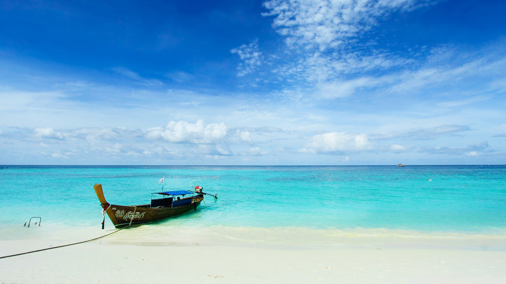
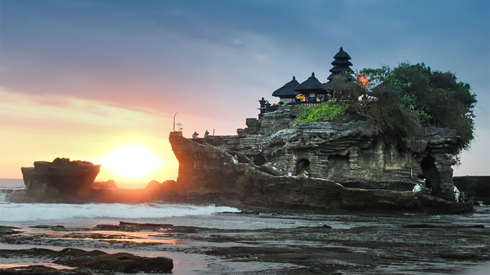
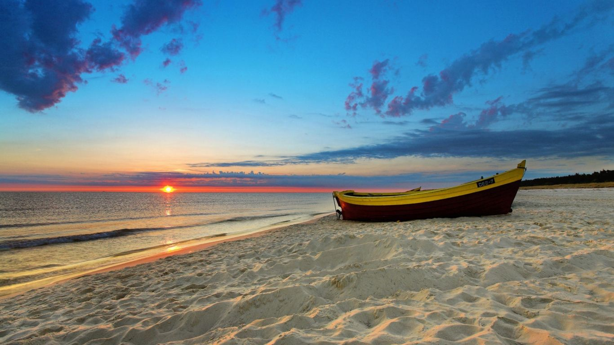
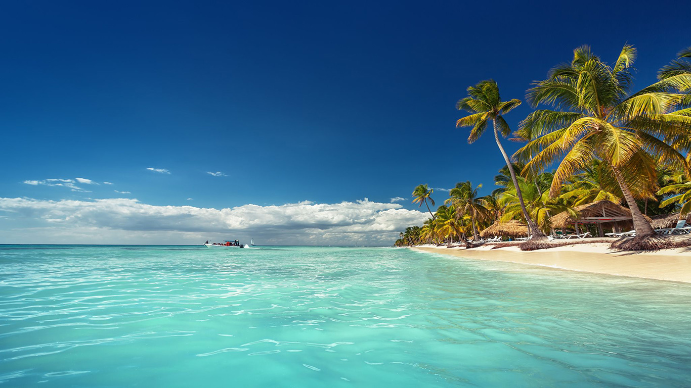

- 
- 
- 
- 
ABOUT US
An archipelago spanning over forty thousand square kilometers and made up of about one thousand five hundred tiny islands, many of which are uninhabited, Raja Ampat is one of Indonesia’s most popular tourist destinations.
The name Raja Ampat, which means “The Four Kings”, comes from a local myth that tells a story of a woman who came across seven eggs. Out of the seven, four hatched and became kings that occupied four of Raja Ampat’s biggest islands—Batanta, Salawati, Waigeo and Misool.
Raja Ampat is part of the Coral Triangle that includes East Timor, Papua New Guinea, The Philippines, Malaysia and The Solomon Islands. The climate is tropical and the temperatures are mild all year round, making it so that anyone coming here on holiday can diving at Raja Ampat any time of the year. The surrounding landscape is made up of rainforests that provide a perfect contrast with the white sandy beaches. It truly is worth seeing for yourself. So, if you’re looking to go on vacation in Indonesia, you must go see Raja Ampat and stay in Papua Paradise one of the Eco Resort in Raja Ampat.
SIDEBAR
Raja Ampat in Indonesia is scuba diving heaven. There's no place quite like it for scuba divers and is top on most divers bucket list! However, it is notoriously expensive and hard to get to, so when doing it it's got to be done properly!
A great first dive for your Raja Ampat adventure. Consisting of a coral column that plunges down to 25 meters deep. Perfect for beginners or those at an intermediate level, in light of its currents, which are usually light but can occasionally be rather strong. As a rule you can expect is to see many yellow snappers on the reef and, if you dive down a little farther, you can find Wobbegong sharks.
One of the more famous of the Raja Ampat Dive and is often dived with Mioskon as the 2nd dive. An underwater pinnacle that starts around 7 meters and goes down to less than 30 meters. You can expect to find all sorts of different fish species and several cleaning stations, big schools of fish and larger predator fish, sharks and manta rays in season are also common sittings. Pygmy Seahorse are also abundant on this Central Raja Ampat dive site.
SPA CENTER
Seventeen thousand islands, including Sumatra, Java, Sulawesi, and parts of Borneo (Kalimantan) and New Guinea (Papua).
FITNESS CENTER
Seventeen thousand islands, including Sumatra, Java, Sulawesi, and parts of Borneo (Kalimantan) and New Guinea (Papua).
DELICIOUS FOOD
Seventeen thousand islands, including Sumatra, Java, Sulawesi, and parts of Borneo (Kalimantan) and New Guinea (Papua).